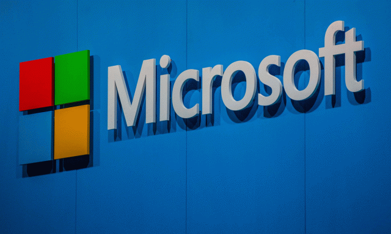

Gates nos salvará: Microsoft ganó 13.893 millones de dólares entre julio y septiembre, un 30% más

Microsoft ha presentado resultados entre julio y septiembre de este año (aunque también corresponden al primer trimestre de 2021, según las cuentas de la compañía, que inicia su año fiscal en julio).
Pues bien: en el tercer trimestre de 2020, el gigante tecnológico ganó 13.893 millones de dólares, un 30 % más que en el mismo período del ejercicio anterior, ha informado la compañía.
La deuda a largo plazo se redujo desde los 59.578 millones a los 57.055 millones actuales.
La idea de que Gates, el hombre más rico del mundo, el gran filántropo (aborto incluido) nos salvará del virus no tiene mucha lógica pero ha cundido enrte todos los no-pensantes del planeta.
La facturación alcanzó los 37.154 millones de dólares, frente a los 33.055 millones del mismo trimestre del año anterior.Y es que a la compañía estadounidense no le ha ido mal con la pandemia del Covid-19 debido al incremento del teletrabajo y del ocio en el hogar.
'Los PC se han convertido en algo crítico para sostener el trabajo, el aprendizaje y la vida en casa y mantener la continuidad de los negocios en las empresas.Los dispositivos con Windows activo aumentan a doble dígito cada año', aseguró el consejero delegado de Microsoft, Satya Nadella, en la conferencia con analistas para comentar los resultados trimestrales, recoge Bussines Insider.
Bill Gates se ha convertido en el ídolo de una sociedad mundial atemorizada ante el virus.La idea de que Gates, el hombre más rico del mundo, el gran filántropo (entre sus actos humanitarios se cuenta la promoción del aborto en los países pobres) nos salvará no tiene mucha lógica pero ha cundido entre todos los no-pensantes del planeta.
Posted On: 2020-10-28T13:30:00
Content Date: 2020-10-28
Download Date: 2021-05-30
Document ID: L0C04CJ9I